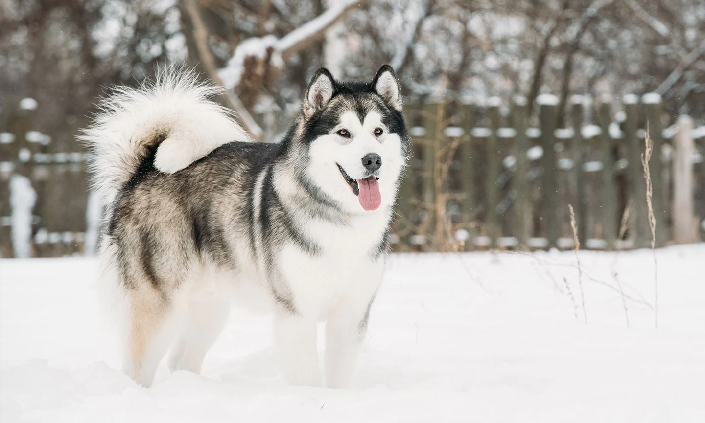
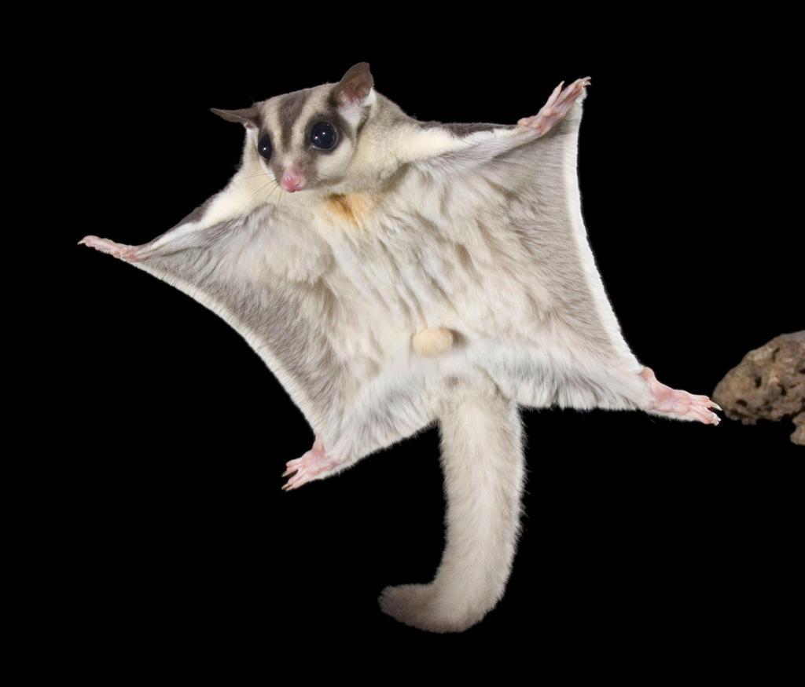
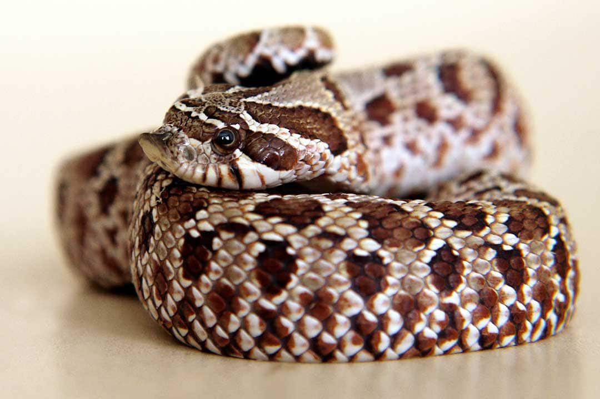

| Rank #1: Alaskan Malamute |
|
|---|---|
|  | Did you know that the Malamute is Alaska's official dog! Also, malamutes were used in World War II, this time to sniff for mines, carry weapons and act as search-and-rescue dogs. |
| Rank #2: Sugar Glider |
|
|---|---|
|  | A sugar Glider's glid can reach about 150 feet! Also, they can leap out to catch flying insects midair. They are nocturnal creatures that hunt little bugs at night. |
| Rank #3: Western Hognose Snake |
|
|---|---|
|  | |